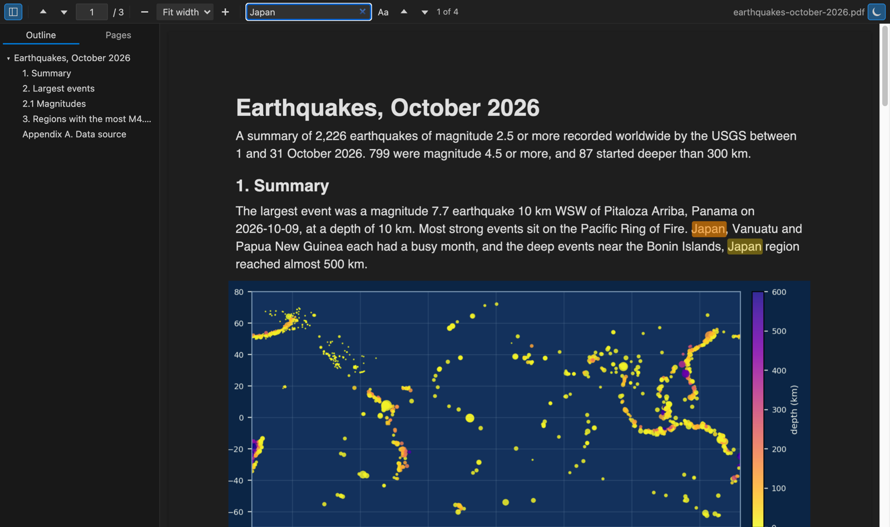

Open files in VS Code and Cursor / Office files
Compare two PDF files for differences
Acrobat Pro has Compare Files, and sites like Draftable or Diffchecker compare PDFs you upload. In VS Code, PDF Viewer has Compare Two PDFs: pages are paired by their text, deleted words are struck in red, new words are green and moved text is blue. It runs on your computer, so a contract or a spec never leaves it. Reading PDFs is free; Compare Two PDFs is a Zovo Pro tool with 3 free tries, then USD 19 once.
Free, MIT license. Extension ID zovo.pdf-viewer-dark, version 0.3.5. Needs VS Code 1.90.0 or newer.

Steps in VS Code
- Install PDF Reader from the Marketplace, or press Ctrl+P (Cmd+P on macOS) and run
ext install zovo.pdf-viewer-dark. - Click the newer
.pdfin the Explorer. It opens in PDF Viewer with dark, light or sepia pages. - Reading, find, the outline and highlights are free.
Where Zovo Pro saves time
Reading, dark and sepia pages, find, the outline, thumbnails and highlights are free. The compare is a Pro tool.
Because pages are paired by their text, an added or removed page does not throw off the rest. The report shows each changed page as "Page 4 -> Page 5" with a button that opens PDF Viewer at that page, and the change list saves as CSV or Markdown (page A, page B, type, old text, new text).
With Compare Two PDFs (Zovo Pro)
- Run "PDF: Compare Two PDFs (Pro)..." or pick Compare PDFs in the page tools menu.
- Pick the other PDF. If Git tracks the file and it has changed, you can compare it with its last commit.
- Read the report: deleted words in red, new words in green, moved text in blue.
- Save the report as HTML, or the change list as CSV or Markdown.
Compare Two PDFs works 3 times on your computer before it asks for a license, and a try counts only when you get a result. Nothing about Pro shows when you open a file.
Zovo Pro costs USD 19 once. It is not a subscription, and it turns on the Pro tools in every Zovo extension, not only PDF Reader. After a card payment (Stripe) your license key shows on the next page. In VS Code, run "Zovo Pro: Enter Zovo Pro license key" from the Command Palette and paste it. The key is checked on your computer, with no network call. With GitHub Sponsors, pick the "$19 one time" tier, then run "Zovo Pro: I already paid: unlock with GitHub Sponsors" and sign in with the same GitHub account. With PayPal, send USD 19 with "Zovo Pro" in the note and the key comes by email within a day.
A team of 5: USD 59 once, by card or by PayPal. Every rule and every Pro tool is on the Zovo Pro page.
Steps in Cursor, Windsurf or VSCodium
- Open the Extensions view with Ctrl+Shift+X (Cmd+Shift+X on macOS).
- Search for
zovo.pdf-viewer-darkand click Install. Cursor, Windsurf and VSCodium install from Open VSX, where it is published aszovo/pdf-viewer-dark. - If your editor has no gallery, download the .vsix from the Open VSX page and run "Extensions: Install from VSIX...".
- Then use it the same way as in VS Code.
What PDF Reader handles
- Text changes, including moved text.
- Added and removed pages.
- Compare with the last Git commit.
- A 500 page PDF in a few seconds, with progress and Cancel.
What it does not do
- It compares text, not pictures or layout.
- A scanned page with no text layer is named in the report, not compared.
Other options
- Adobe Acrobat Pro. Compare Files also checks fonts, images and page order. Part of the Acrobat Pro subscription.
- comparepdf. A free command-line tool on Linux that compares the text or the look of each pair of pages.
- Draftable, Diffchecker. Web compare tools. Your PDFs are uploaded.
Install counts and Open VSX status were checked on 11 November 2026. Descriptions in quotes are the extensions' own.
Questions
Does it find changes in images?
No. It compares text. For a visual check of scanned pages, use a pixel compare tool.
Are my PDFs uploaded?
No. The compare runs in VS Code on your computer.
What else does Pro add to PDF Viewer?
Page tools: extract, delete, split and merge pages, and one Markdown file with the highlights of all your PDFs.
Does it work in Cursor or Windsurf?
Yes. Cursor, Windsurf and VSCodium install extensions from Open VSX. Search for the extension in their Extensions view and install it there.
More about PDF Reader
Read the PDF Reader page for every feature and setting, or the source code on GitHub.
Related guides
- PDF Viewer & PDF Reader (Dark Mode) on the VS Code Marketplace (also on Open VSX). Reads PDFs with dark pages, search, an outline and highlights.
- Read PDFs in dark mode in VS Code
- Open a PDF in Cursor
- Open a PDF file in VS Code
- Extract pages from a PDF without uploading it
Zovo Pro and support
Zovo Pro: USD 19 once, every Zovo viewer. It turns on the Pro tools in this extension and in the other Zovo extensions you use. The free features stay free.
After a card payment your license key shows on the next page. Paste it with the command "Zovo Pro: Enter a key".
You can also support the work with no Pro:
Need your format supported?
Open a format request with a sample file, and I reply there whether it can be done. For USD 299 once, through this GitHub Sponsors tier, I add your file format or a missing feature to this extension, with tests, within 7 days.